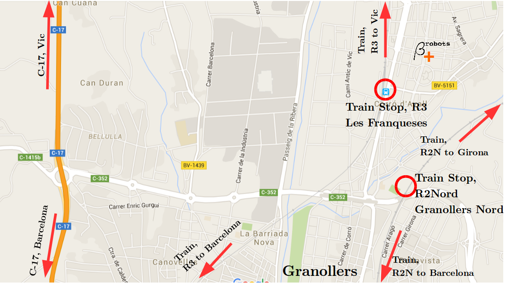
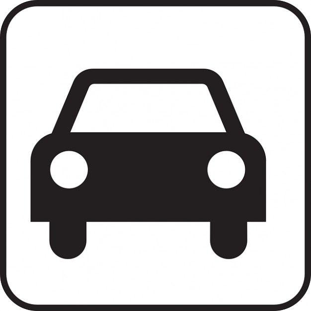

Twitter:
@btRobots
Twitter:
@btRobots
Address:
Beta Robots SL
NIF: B66726902
Passeig dels Til.lers, 44. 08520.
Corró d'Avall, Les Franqueses del Vallès.
Barcelona. Catalunya. Spain.

Reach us by public transportation.
Two train options, both at 40' from Barcelona downtown.
Check the time schedule
here.
Line R3: Trains direction to Vic or Ripoll. Check that the train stops at all stations. In Barcelona, get on at Sants, PlCatalunya, ArcdeTriomf, LaSagrera. Get off at Les Franqueses del Vallès. Walk 8', Bike 3'.
Line R2Nord: Trains direction to Sant Celoni. Check that the train stops at all stations. In Barcelona, get on at Sants, PasseigGràcia, Clot, StAndreuComtal. Get off at Granollers Nord. Walk 20', Bike 8'.
 Reach us by car.From Barcelona, take the C-17 road direction to Vic, and exit at "Granollers Nord". Follow indications to Les Franqueses / Corró d'Avall.
-
 info(at)beta-robots.com
info(at)beta-robots.com
-